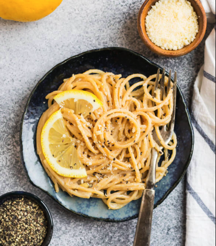

Cacio e Pepe

Ingredients
- Kosher salt
- Freshly ground black pepper
- 8oz. pasta (such as fettuccine, bucatini, or spaghetti)
- 3 Tbsp. unsalted butter, cubed, divided
- 2 cloves garlic minced
- 1 medium lemon plus additional for serving
- 1/2 cup finely grated Parmesan cheese about 1 1/2 ounces, plus additional for serving
Directions
- Bring a medium pot of salted water to a boil—use an amount of water so that the pasta is more crowded in the water than it typically would be (see photo in blog post above). Cook the noodles until al dente according to package instructions. Reserve 1 cup of the pasta water, then drain the pasta.
- When the pasta is nearly done cooking, melt the butter in a large skillet over medium heat. Add the garlic and cook 30 seconds. If the garlic is done cooking before the pasta is ready, remove the pan from the heat so the garlic doesn’t burn.
- As soon as the pasta is drained, add the hot pasta to the skillet with the garlic. Pour in 1/2 cup of the reserved pasta water. Increase the heat to medium-high, then with a pair of tongs, toss to coat. Continue cooking and tossing constantly, until the sauce turns shiny and coats the noodles—it will take a minute or so. The pasta will be coated in a shiny, silky sauce. If the pasta becomes too tight at any point, splash in a tablespoon or two of the reserved pasta water (add the water slowly so that the pasta doesn’t become watery).
- Zest the lemon over the top. Cut the lemon into quarters, then squeeze in the lemon juice. Sprinkle on the Parmesan. Toss again to combine. The cheese might be a bit clumpy at first, but just keep tossing, adding the tiniest splashes of pasta water only as needed. Add a good pinch of salt and several generous grinds of black pepper. Toss again. Taste and add more salt and pepper to taste. Transfer to serving plates and top each serving with a sprinkle of extra Parm and a bit more black pepper. Enjoy hot.